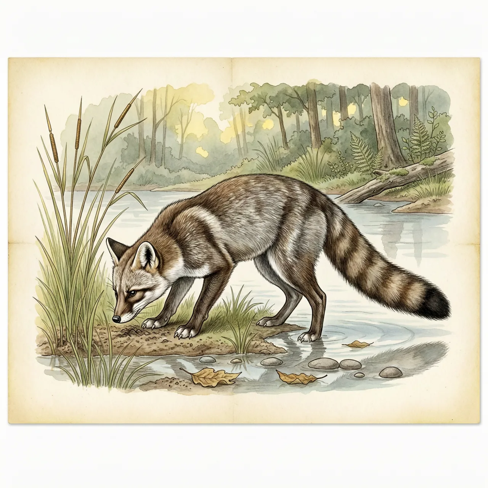
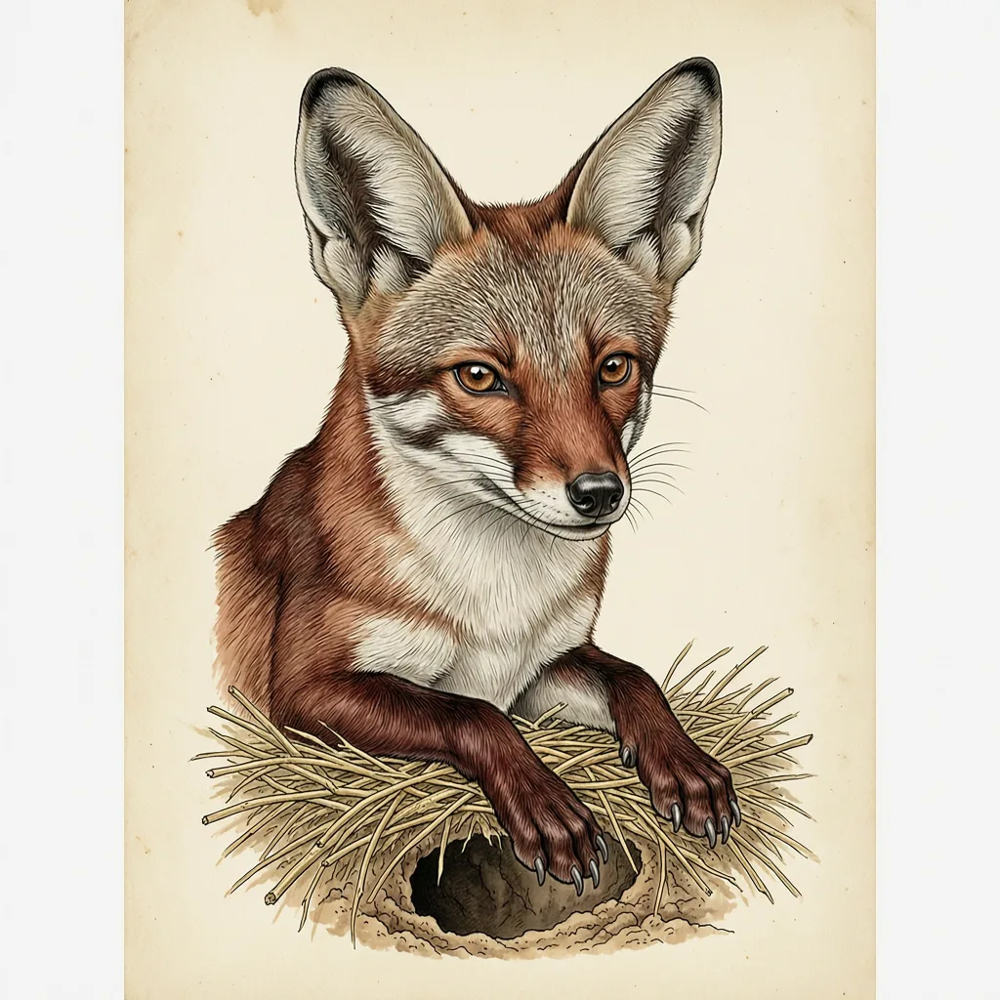

食蟹狐是南美洲中部的中型犬科动物，自哥伦比亚及委内瑞拉向南，分布到巴拉圭、乌拉圭及阿根廷北部。雨季它走到山上，旱季回到低地；一夫一妻，雌雄共同照顾幼崽。名字里的蟹集中在雨季的菜单上，旱季它多吃昆虫，随季节换食。
雨季它往山上走，旱季它回低地，这是食蟹狐一年一度的节奏。它的分布铺满南美洲中部，自哥伦比亚及委内瑞拉向南，直到巴拉圭、乌拉圭及阿根廷北部。大草原和人造林它住得下，亚热带森林与河岸森林也可以；除了雨林、高山和辽阔开放的草原之外，几乎没有食蟹狐不能待的环境。
食蟹狐一夫一妻，平时成对生活，到繁殖季节才聚成小群。旱季它们占有领地，雨季食物充足时，就不太在意边界了。繁殖不固定在某一时间，一年常有两次，多在11月或12月及7月前后开始：妊娠期56天，每胎3-6只幼狐，刚出生时既看不见也没有牙齿，约14天睁眼，30天后能吃固体食物，90天左右断奶。公狐和母狐都照顾幼崽，幼狐9个月大时性成熟，开始用尿液划分领地。巢筑在草丛里，留出多个入口；挖隧道之外，它们也会搬进别的动物的洞穴。
食蟹狐最误导人的是它的名字。蟹确实吃，但集中在雨季；旱季一来，它多吃的是昆虫。这副长着42颗牙齿的犬科面孔是标准的机会主义者：果实、蛋、龟、蜥蜴、甲壳类甚至腐尸都入口，食谱由季节和地点决定。它不袭击家畜，肉也不可口，却仍常被猎杀；当地人把它驯养起来，这也没有减轻它面临的威胁。
